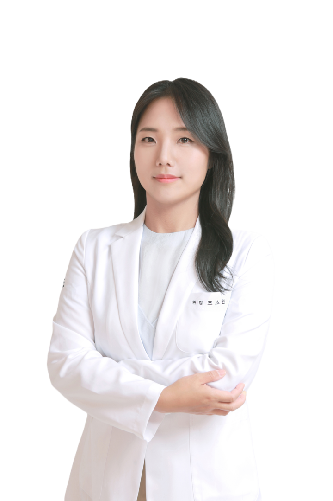
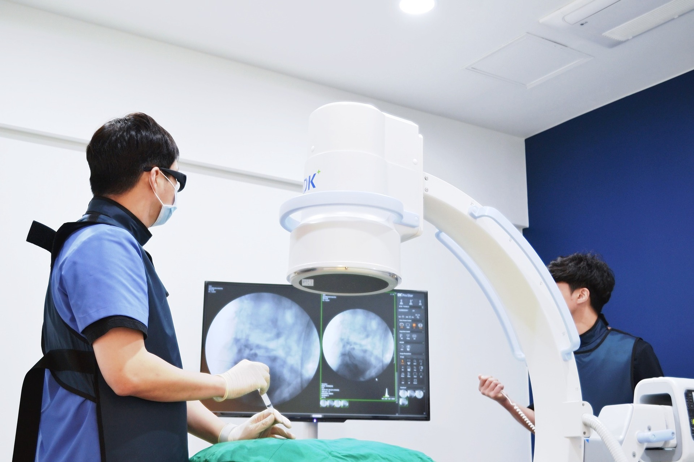
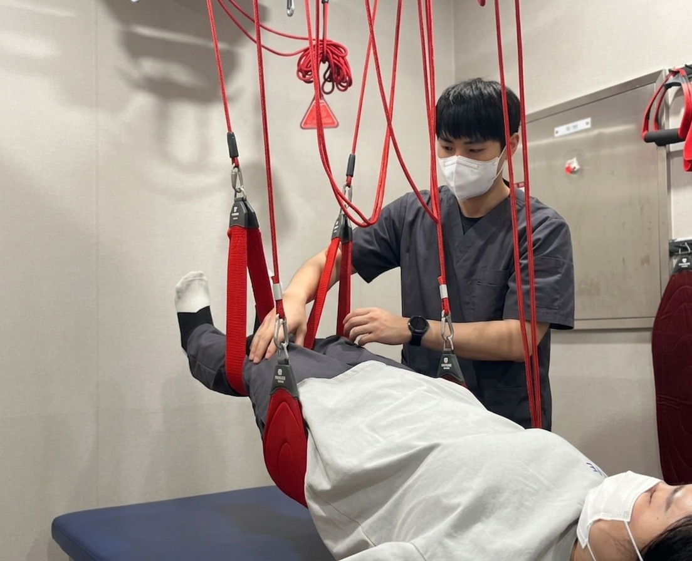
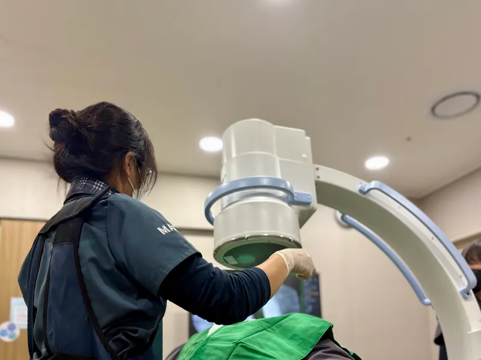
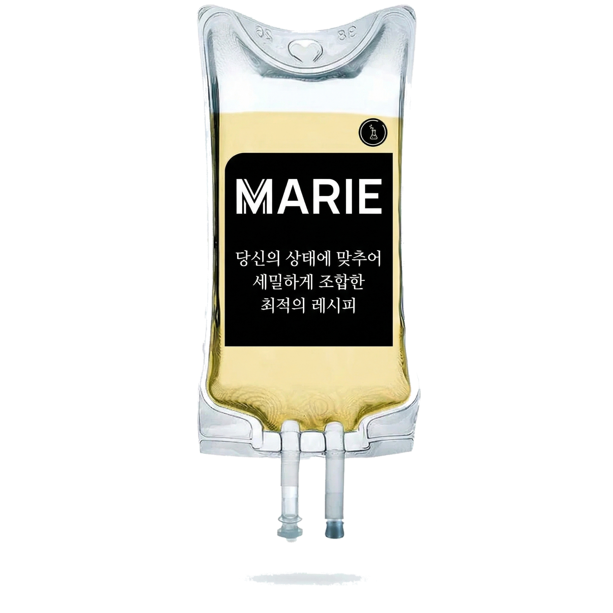
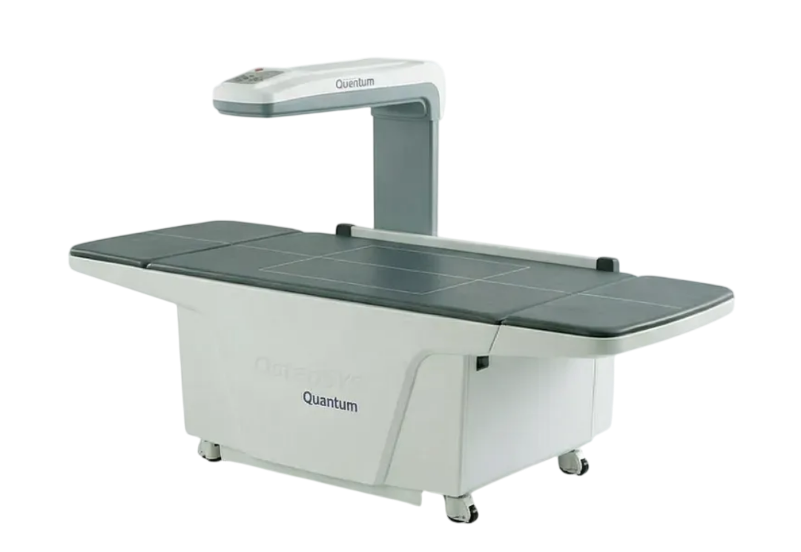
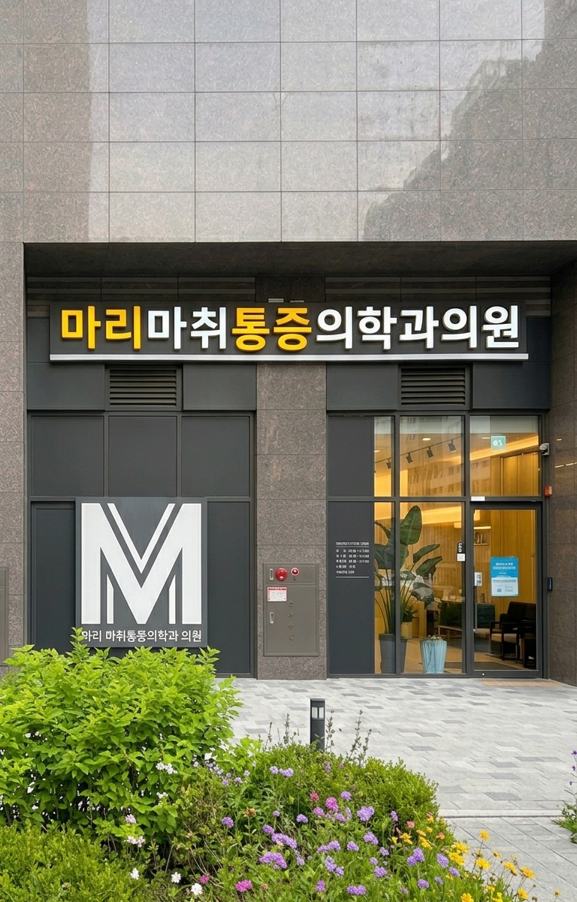
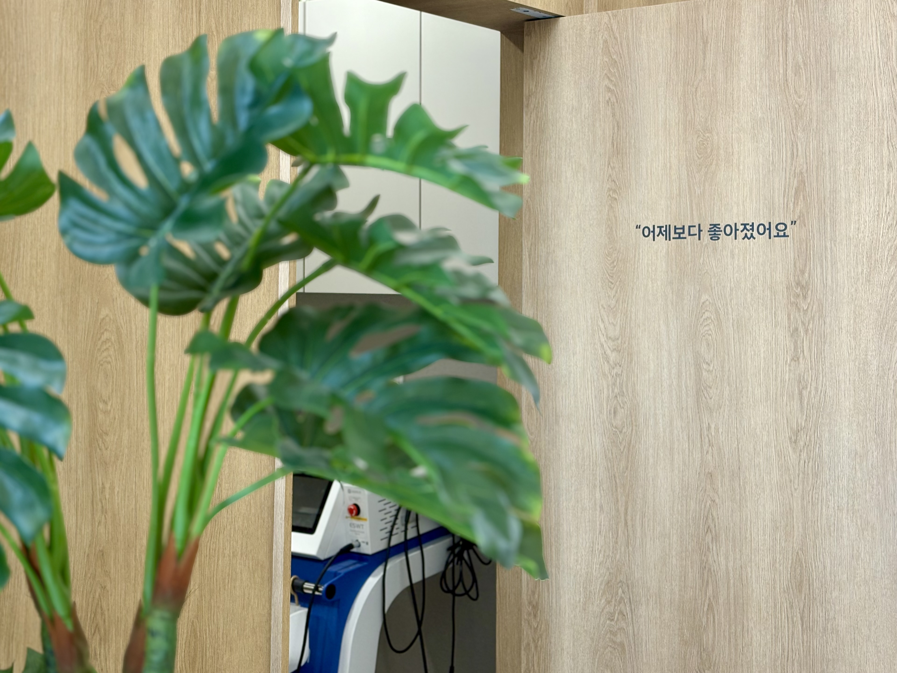

마리마취통증의학과
네이버 예약
다음 진료 예약
마리마취통증의학과
여러 병원 다녀도
낫지 않는 통증,
원인부터 다시 찾습니다
첫 방문, 진찰부터 치료까지
숫자로 보는 마리
- 광교에서
- 0년째
- 엑스레이 투시(C-ARM) 시술
- 0건+*
- 주사 치료한 날의
- 99.8%**영상을 보며
* 2019년~2026년 10월 누적 ** 최근 1년, 주사 치료한 날 기준
이창희
조소연
의료진
마취통증의학과 전문의 2인이 직접 진료합니다


대표원장 · 수요일 휴진
"통증은 참는 게 아니라
원인을 찾아야 끝납니다"
원인을 찾아야 끝납니다"
이창희원장
마취통증의학과 전문의
대한통증학회 인정의
서울성모병원 통증센터 전임의
대한통증학회 인정의
서울성모병원 통증센터 전임의
여성전문의 · 목요일 휴진
"두려움을 없애는 것도
치료의 일부입니다"
치료의 일부입니다"
조소연원장
마취통증의학과 전문의
대한통증학회 인정의
서울성모병원 통증센터 전임의
대한통증학회 인정의
서울성모병원 통증센터 전임의
감염관리 기준
주사·시술, 안심하고 맡기세요
매 시술, 같은 감염관리 기준으로 — 질병관리청·WHO 지침
일회용 주사기·주사제
멸균 포장
쓰고 나면 바로 폐기
쓰고 나면 바로 폐기
기구 멸균·소독
트레이는 고압증기 멸균
프로브·베드는 매번 소독
프로브·베드는 매번 소독
손위생·교육
시술 전후 WHO 손위생
전 직원 감염 교육 연 1회 이상
전 직원 감염 교육 연 1회 이상
진찰한 날, 바로 치료
진찰 · 검사 · 치료를 한 번 방문으로
1 · 진찰
전문의가 직접
어디서 오는 통증인지
원인부터 짚습니다
원인부터 짚습니다
2 · 검사
그 자리에서
엑스레이·초음파로
바로 확인합니다
바로 확인합니다
3 · 치료
그날 바로
주사·충격파·도수를
몸에 맞게 골라 시작합니다
몸에 맞게 골라 시작합니다
처음 오시면
접수부터 치료까지 대개 1시간 안팎
C-ARM 신경차단술건강보험
참을 수 없는 통증,
신호부터 끊습니다
신호부터 끊습니다
목·허리 디스크 · 척추관 협착증
영상을 보며 아픈 신경 가까이 놓습니다
팔·다리로 뻗치는 저림과 통증에
영상을 보며 아픈 신경 가까이 놓습니다
팔·다리로 뻗치는 저림과 통증에
C-ARM 시술 33,000건+

“
조금만 걸어도 쉬어야 했는데
허리 신경차단 주사를 맞고
한 달쯤 지나니
훨씬 오래 걸을 수 있게 됐어요
허리 신경차단 주사를 맞고
한 달쯤 지나니
훨씬 오래 걸을 수 있게 됐어요
— 60대 · 허리 디스크·협착
환자가 진료 중 말한 경과를 뜻에 맞게 옮겼으며, 호전 정도와 기간은 사람마다 다릅니다
체외충격파 (ESWT)
수원 유일
독일 도니어 Aries 2 보유
석회성 건염 · 족저근막염 · 테니스엘보
“
아침 첫발 디딜 때 아프던 발바닥이
충격파 치료를 일주일에 한두 번씩
네 번 받고 한 달쯤 지나니
이제 전혀 안 아파요
충격파 치료를 일주일에 한두 번씩
네 번 받고 한 달쯤 지나니
이제 전혀 안 아파요
— 60대 · 족저근막염
환자가 진료 중 말한 경과를 뜻에 맞게 옮겼으며, 호전 정도와 기간은 사람마다 다릅니다
자가혈소판 주사
수술 없이,
재생치료의 정점
PRP
재생치료의 정점
PRP
초음파를 보며 필요한 부위에 놓습니다
PRP 시술 1,800건+
프롤로주사도 시행합니다
“
계단 오르내릴 때 아프던 무릎이
PRP 주사를 맞고 3~5주쯤 지나
많이 나아졌어요
통증은 20~30% 정도만 남았어요
PRP 주사를 맞고 3~5주쯤 지나
많이 나아졌어요
통증은 20~30% 정도만 남았어요
— 40대 · 무릎관절증
환자가 진료 중 말한 경과를 뜻에 맞게 옮겼으며, 호전 정도와 기간은 사람마다 다릅니다
콘쥬란 · 무릎 콜라겐건강보험
무릎이 뻣뻣하고
계단이 무섭다면
관절주사, 건강보험으로
계단이 무섭다면
관절주사, 건강보험으로
콘쥬란(PN)·무릎 콜라겐(라제안), 성분이 다른 두 주사
무릎 상태에 맞춰 골라 영상을 보며 놓습니다
무릎 상태에 맞춰 골라 영상을 보며 놓습니다
인대·힘줄 콜라겐 주사도 있습니다

“
콘쥬란 주사를
2주쯤 간격으로 두 번 맞고
3주쯤 지나니
무릎이 많이 좋아졌어요
2주쯤 간격으로 두 번 맞고
3주쯤 지나니
무릎이 많이 좋아졌어요
— 40대 · 무릎관절증
환자가 진료 중 말한 경과를 뜻에 맞게 옮겼으며, 호전 정도와 기간은 사람마다 다릅니다
도수 · 운동치료건강보험
같은 곳이 자꾸 아프면
움직임부터 봅니다
움직임부터 봅니다
아픈 동작을 치료사가 평가하고
손으로 풀고, 운동으로 이어 갑니다
손으로 풀고, 운동으로 이어 갑니다

어깨 통증
팔이 안 올라가는 어깨,
오십견부터
회전근개까지
오십견부터
회전근개까지
어깨 주사신경차단 · 관절주사, 영상을 보며
수압팽창술굳은 어깨(오십견)에
충격파 · 도수석회성 건염, 굳은 근육에 · 심부열 고주파도 함께

“
수압팽창술에 목 주사까지 함께 받고
1주 만에 어깨가 많이 좋아졌어요
5주쯤엔 90% 정도 나아졌어요
1주 만에 어깨가 많이 좋아졌어요
5주쯤엔 90% 정도 나아졌어요
— 60대 · 오십견
환자가 진료 중 말한 경과를 뜻에 맞게 옮겼으며, 호전 정도와 기간은 사람마다 다릅니다
수액 치료
통증 치료 왔는데
몸까지 지쳤다면
몸까지 지쳤다면
감기몸살 · 만성피로 · 갱년기 · 대상포진
증상에 맞는 수액으로 회복을 앞당깁니다
증상에 맞는 수액으로 회복을 앞당깁니다
통증 치료와 함께 받고 가세요

“
잠 못 잘 만큼 아프던 게
초기부터 신경차단 주사를
일주일에 네댓 번씩, 열네 번쯤 맞고
3주 반 만에 거의 안 아파요
초기부터 신경차단 주사를
일주일에 네댓 번씩, 열네 번쯤 맞고
3주 반 만에 거의 안 아파요
— 50대 · 대상포진
환자가 진료 중 말한 경과를 뜻에 맞게 옮겼으며, 호전 정도와 기간은 사람마다 다릅니다
50세 이상이라면
통증 치료 오신 김에,
한 번에 챙기세요
대상포진 예방접종
대상포진 후 신경통,
몇 달씩 잠 못 이룹니다
몇 달씩 잠 못 이룹니다
걸린 뒤엔 치료가 오래 걸립니다
예방접종이 최선입니다
예방접종이 최선입니다

골밀도 검사
골다공증은
증상 없이 진행됩니다
증상 없이 진행됩니다
폐경 뒤이거나 나이가 들수록
정기 검사를 권합니다
정기 검사를 권합니다
부위별 진료
통증 부위별 전문 치료
목·허리
목 디스크
허리 디스크
척추관 협착증
좌골신경통
경추성 두통
어깨
오십견
회전근개 파열·염증
석회성 건염
팔꿈치·손
테니스엘보
골프엘보
방아쇠 손가락
손목 힘줄염
무릎·발
무릎 관절염
족저근막염
아킬레스 힘줄염
신경 통증
대상포진
대상포진 후 신경통
손목터널증후군
늑간신경통
다쳤을 때
교통사고 통증
목·허리 염좌
발목 염좌
원인을 찾고, 몸에 맞게 치료합니다
영상을 보며 놓는 주사 · PRP · 충격파 · 도수까지 한곳에서
영상을 보며 놓는 주사 · PRP · 충격파 · 도수까지 한곳에서
오늘 진료 때
같이 받고 가세요
"충격파도 같이 받을 수 있나요?"
"수액도 맞고 싶어요"
"검사 한번 받아 보고 싶어요"
말씀만 하시면, 같이 받으실 수 있는지
그 자리에서 바로 알려 드립니다
그 자리에서 바로 알려 드립니다
마리마취통증의학과
진료 안내
평일10:00 – 19:00
점심13:00 – 14:00
토요일09:00 – 14:00 · 점심시간 없음
접수진료 마감 직전까지
일요일·공휴일휴무
이창희 원장 수요일 휴진
조소연 원장 목요일 휴진
점심13:00 – 14:00
토요일09:00 – 14:00 · 점심시간 없음
접수진료 마감 직전까지
일요일·공휴일휴무
이창희 원장 수요일 휴진
조소연 원장 목요일 휴진
031-213-1515
다음 진료는 네이버 예약으로 — 오른쪽 아래 QR

오시는 길
수원시 영통구 도청로 103, 1층 107호
주차
건물 뒤편 입구로 들어와 지하 P1·P2에 주차하세요
상가 전용 엘리베이터로 1층 · 2시간 무료
지하철
신분당선 광교중앙역 2번 출구
도청로를 따라 걸어서 400m

마리의 약속
"어제보다
더 좋아졌어요"
더 좋아졌어요"
이 한마디를 듣기 위해
끝까지 함께합니다
끝까지 함께합니다
마리마취통증의학과